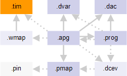

Timing file
The timing file contains information about device cycles, edges, waveforms, and clocks.

The timing file has the .tim file name extension. It can be chosen in two ways:
- If direct waveform mapping is used, the timing file is referenced from the APG pattern file using the :waveformMap: keyword.
The wavetable syntax in the timing file can be found in Wavetable syntax.
- If indirect waveform mapping is used, the timing file chosen in SmarTest is implicitly used.
Timing files are generated within SmarTest when the timing settings are defined.
Marking timing files for HSM systems
For purposes of testing with HSM systems, it is normally immaterial whether files are specifically marked for HSM or unmarked. However, there is one particular set of circumstances where an HSM-marked set of files is required. This is the case if all of the following is true:
- You are testing on an HSM system.
- Your APG license is slower than your channel license.
- You would like to use the speed of a channel license for a test.
- The test you want to conduct is not a memory test.
If all this is true, you must use files that are marked for HSM systems. This allows you to execute, for example, interface tests at the full speed of your channel license, even though the APG license of your HSM system is lower. With unmarked files, you would be restricted to the lower licensed APG speed.
Functional changes
- Introduced before SmarTest 6.3.2
- SmarTest 7.1.4: Removed support for hsm_no_mts flag